Every changed task
Settings structure
Seven main destinations, with clear task headings and return routes. The repeated static clock preview and universal saved badge are removed; actions give their own feedback.
 Before · Settings structure
Before · Settings structure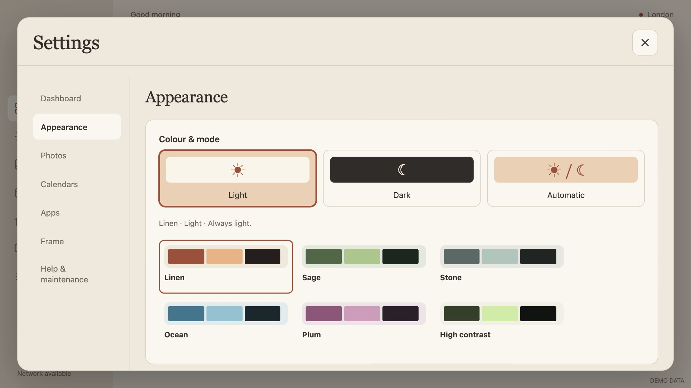
After · Settings structureLight, Dark and Automatic
The three modes are visible choices. Palette and mode remain independent; Automatic still follows offline sunrise/sunset at the configured city.
Before · Light, Dark and Automatic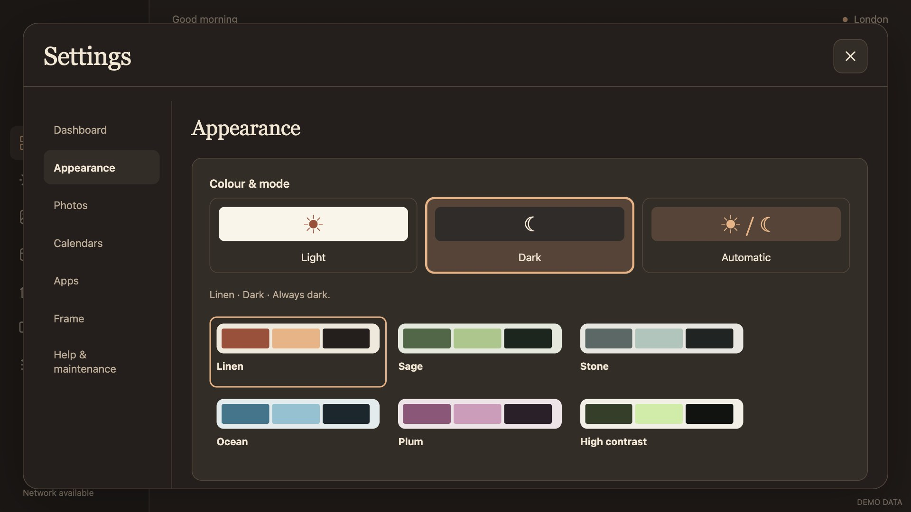
After · Light, Dark and Automatic Text size
Standard and Larger text are visible alternatives. The palette gallery stays visual; there is no dropdown for a two-option decision.
Dashboard editor
The editor opens a dedicated canvas workspace. Coordinates, Arrange neatly, preview-resolution selection and Expand canvas are removed. The canvas follows the current display proportions; a selected widget shows relevant choices.
 Before · Dashboard editor
Before · Dashboard editor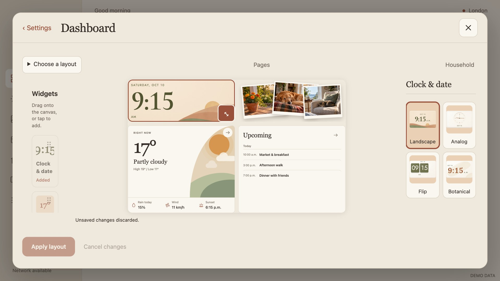
After · Dashboard editorStarting layouts
Balanced, Photos first and Plans first become visual template cards. Choosing one stages a draft; it applies only when Apply layout is pressed. Adding a widget no longer silently rearranges the existing layout.
Before · Starting layouts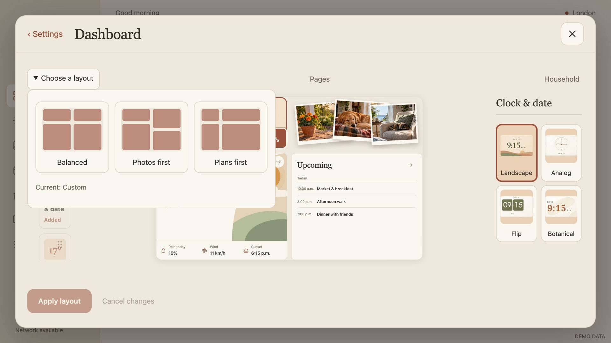
After · Starting layouts Clock styles
Landscape, Analog, Flip and Botanical show actual responsive clock compositions. Changing style is staged with the layout.
Draft recovery
Permanent Undo/Redo buttons leave the main toolbar. Recent changes is available while a layout is dirty. Close, Back, backdrop and category changes ask Apply, Discard or Keep editing; failed saves retain the draft.
Page visibility
Optional sidebar pages and Overview favourite preference live together under Dashboard → Pages. Household is an explicit optional destination.
Momo wardrobe policy
Keep one look, A new look each day and Surprise me are distinct visible policies. Motion and daily rhythm are visible choices rather than mixed with accessories.
 Before · Momo wardrobe policy
Before · Momo wardrobe policy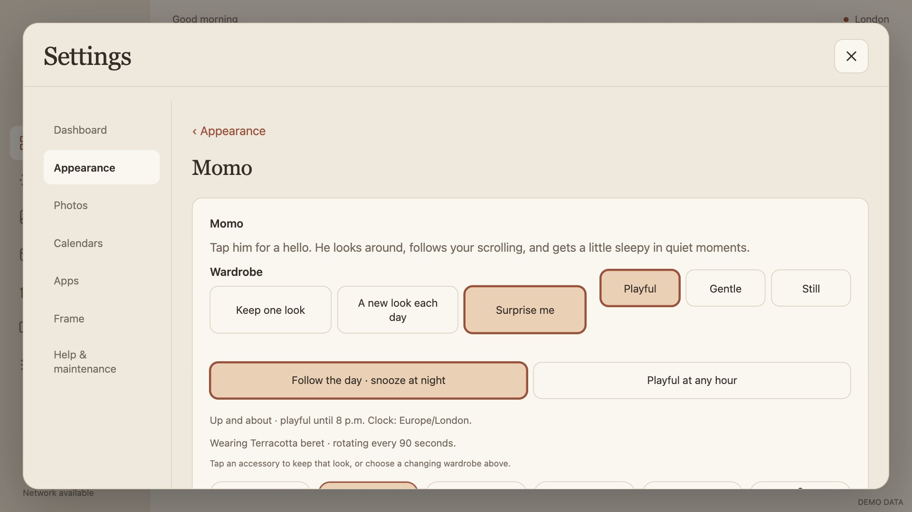
After · Momo wardrobe policyMomo accessory gallery
One illustrated gallery chooses the accessory. Random rotation gets a contextual Try another accessory action; the duplicate accessory dropdown is removed.
 Before · Momo accessory gallery
Before · Momo accessory gallery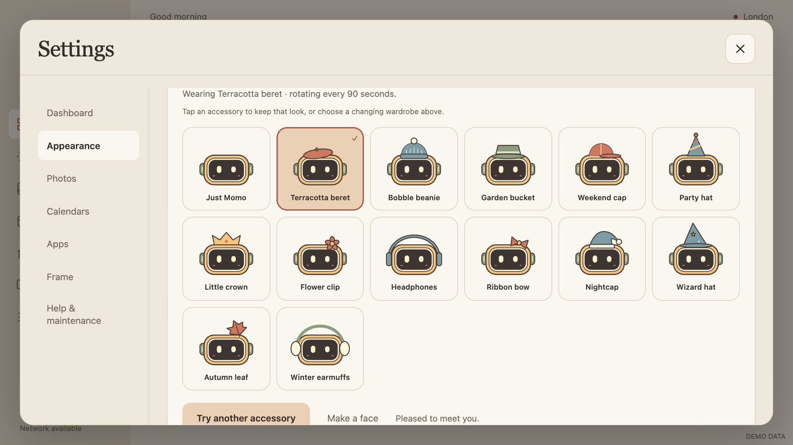
After · Momo accessory galleryCity, units and clock format
City search remains a focused task under Frame. Temperature units and 12/24-hour format become visible two-option choices; the app retains configured timezone behavior.
 Before · City, units and clock format
Before · City, units and clock format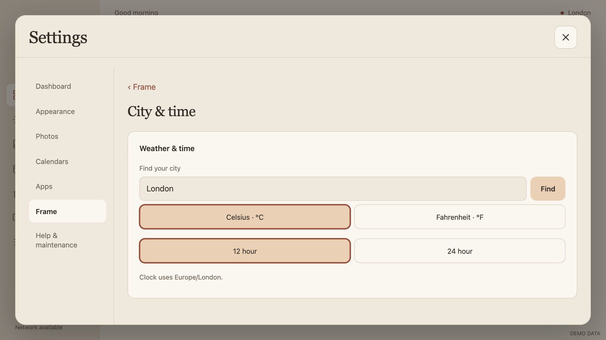
After · City, units and clock formatPhotos landing
Photos opens understandable task destinations instead of a long stack of forms: library, slideshow, collections, review, delivery, retention, import, presentations and temporary phone connection. Shared-album mode shows its supported tasks.
Gallery browsing
Pictures are the primary interaction. Tap a picture to edit it. Permanent checkboxes and repeated Edit buttons are removed from normal browsing.
Gallery selection
Select pictures starts an explicit batch mode; Done selecting returns to browsing. Keep, favourite, exclude, restore and collection membership appear when selection is active.
Picture editing
A focused picture task leads with a large crop preview. Rotate is a direct action, framing uses visible choices, and metadata sits in Photo information. Captions stay off the player; existing stored text is preserved.
Direct crop
Dragging the picture chooses Fill and stages crop position and framing together. Save applies the draft; navigation uses the same dependable departure guard. Custom viewing time remains available on demand.
Slideshow presentation
All five styles become illustrated choices with restrained animated samples: Soft fade, Falling prints, Photo collage, Gentle pan & zoom and Still gallery. Preview presentation opens the real player.
 Before · Slideshow presentation
Before · Slideshow presentation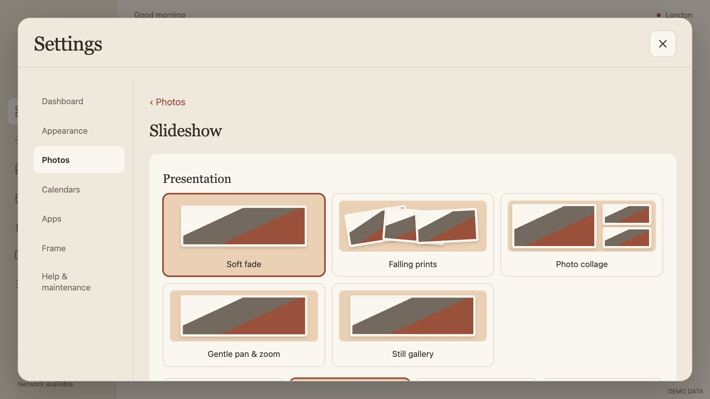
After · Slideshow presentationViewing pace
Common viewing times are visible presets. Another viewing time preserves arbitrary existing values, such as 15 minutes, without forcing them to a preset.
Composition and framing
Layout and background are visual choices. Fit and Fill demonstrate their effect using an eligible local picture. Transition refinement is a separate disclosure; reduced-motion behavior remains in force.
 Before · Composition and framing
Before · Composition and framing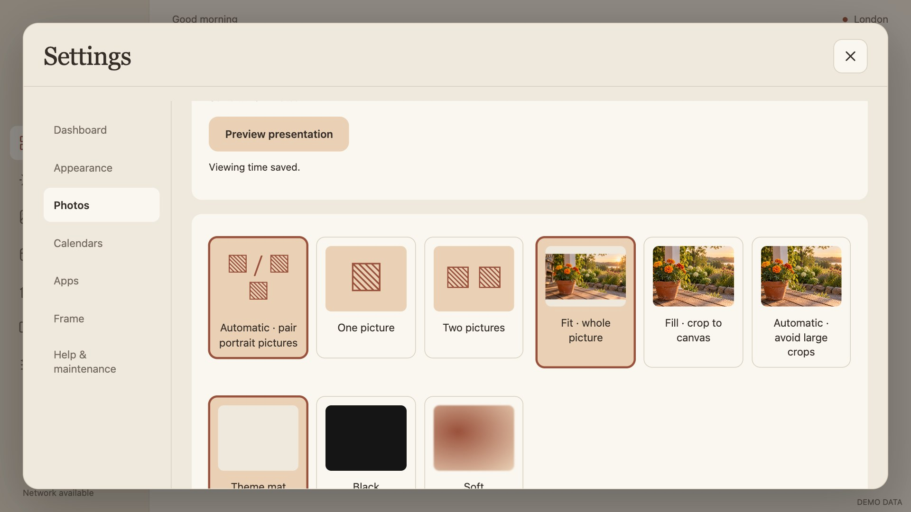
After · Composition and framingTransition refinement
Transition timing has named defaults, with visual type choices. These controls appear only when Fine-tune transitions is opened.
Before · Transition refinement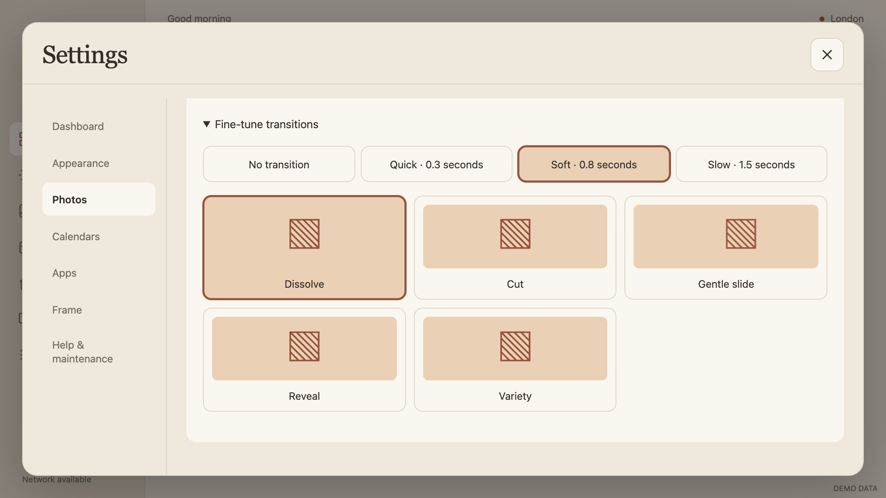
After · Transition refinement Collections and order
Collection cards show the pictures that will play, including favourites and user collections. Excluded pictures are removed from card previews. Order is visible; conditional shuffle weighting and manual arrangement appear when relevant.
 Before · Collections and order
Before · Collections and order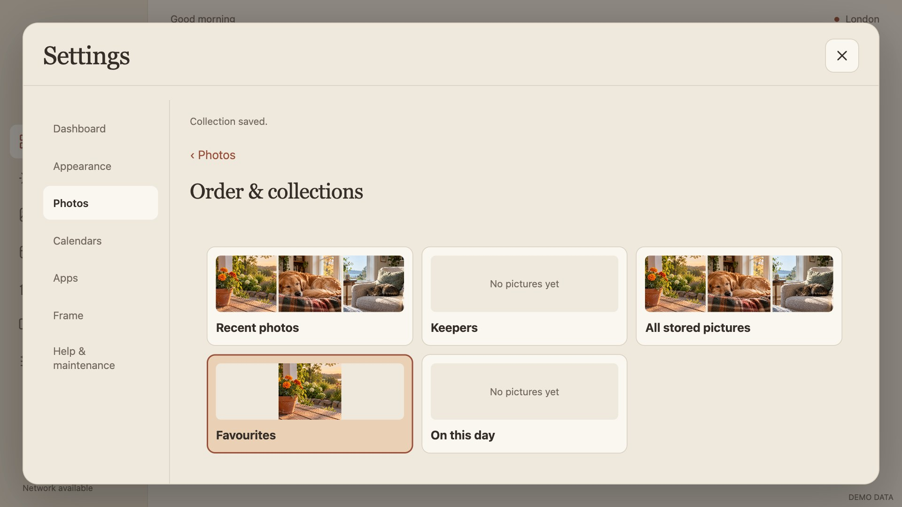
After · Collections and orderReceiving photos
Source choice is visible. Delivery frequency saves independently of credential entry; trusted-sender fields appear only when enabled, with an explicit Apply sender rule action. Account connection is a disclosure with empty credential fields.
Retention and exclusions
Last 30 days, Last 90 days, Last 30 photos and Last 100 photos are foregrounded. Other retention windows remain available on demand. Received-date rules, capacity, Keepers and persistent exclusions are explained together; erase remains deliberate.
 Before · Retention and exclusions
Before · Retention and exclusions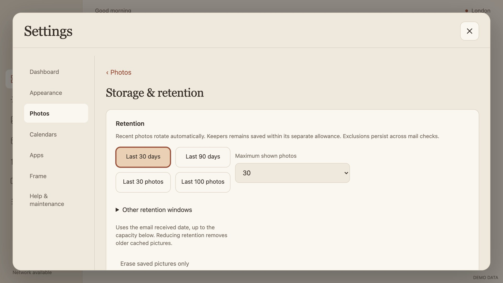
After · Retention and exclusionsArrival review
Review, capture-date policy and storage feedback move to their own task. Existing approval and rejection behavior is retained; private image metadata is not invented.
 Before · Arrival review
Before · Arrival review After · Arrival review
After · Arrival reviewImport and soundtrack
Picture and muted-clip import are clear task actions. Optional soundtrack details and volume appear only when needed. Native format/capacity/privacy boundaries remain unchanged.
 Before · Import and soundtrack
Before · Import and soundtrack After · Import and soundtrack
After · Import and soundtrackSaved presentations
Saved presentations are visual cards. Creation is an explicit disclosure; removal requires a second tap. Seasonal options use named months; title/video-export refinements remain available on demand.
 Before · Saved presentations
Before · Saved presentations After · Saved presentations
After · Saved presentationsTemporary phone connection
Phone curation gets a focused destination. QR invitation, matching-number approval and immediate Stop retain their existing temporary encrypted behavior.
 Before · Temporary phone connection
Before · Temporary phone connection After · Temporary phone connection
After · Temporary phone connectionDaily routine
Automatic photo delay, schedule, app brightness and quiet/privacy behavior are grouped under Frame → Daily routine. Common idle delays are visible choices; detailed schedules remain available.
Household content
Household is reached from the dashboard workspace. Notes remain local; countdown creation appears under Add a date instead of competing with existing content.
Calendars
Connected calendars and visibility are primary. Connect another calendar is a deliberate disclosure, with visual colour choices. Secret feed fields retain the direct read-only integration and never appear in public screenshots.
 Before · Calendars
Before · Calendars After · Calendars
After · CalendarsInviter review
Pending decisions and approved organizers precede setup. Review policy and account setup remain in a disclosure; the screen states that these are frame-only display decisions.
 Before · Inviter review
Before · Inviter review After · Inviter review
After · Inviter reviewApps
Google Home leads with Open Google Home. The connection URL lives under Connection details. YouTube shortcuts are a separate task; opening a service is not described as verified sign-in or control.
 Before · Apps
Before · Apps After · Apps
After · AppsYouTube shortcuts
Title/link entry has its own task reached from Apps. It remains optional and separate from page visibility.
 Before · YouTube shortcuts
Before · YouTube shortcuts After · YouTube shortcuts
After · YouTube shortcutsFrame
City/time, Daily routine and Software updates become a short task list. Android Wi-Fi, developer options and app switching retain direct recovery shortcuts.
Update policy
Manual, Notify me, Download and Install when idle are mutually understandable policies. Existing overnight windows remain intact; the window and permission actions appear when relevant. The desktop preview remains explicit about native installation limits.
Help and maintenance
Coarse service health, settings links, setup help and recovery remain together. Healthy services say Refresh; failures say Retry. Routine personalization no longer competes with maintenance.
 Before · Help and maintenance
Before · Help and maintenance After · Help and maintenance
After · Help and maintenancePreference transfer
Export/choose-file replaces the permanent raw JSON form. Android uses its document picker. Valid imports show a non-secret review before Apply; Cancel preserves the original settings. Accounts, photos, links, content and custom layout are excluded.
 Before · Preference transfer
Before · Preference transfer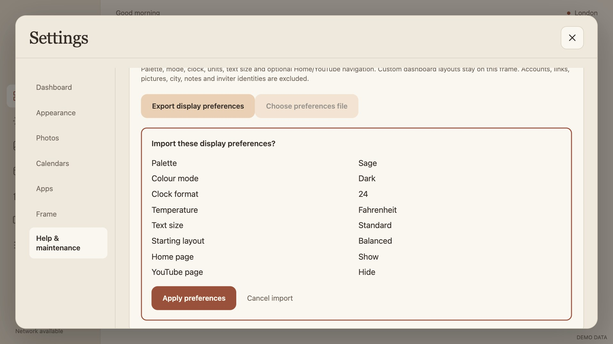
After · Preference transferBuild: 2.16.1 / code 36. Plain HTML/CSS/JS; Android 12 and Chromium/WebView 95 remain the target. Existing warm palette pairs and Momo are preserved. Source changes are on the working branch; this report does not imply a published release.